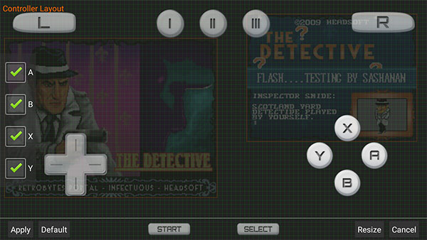
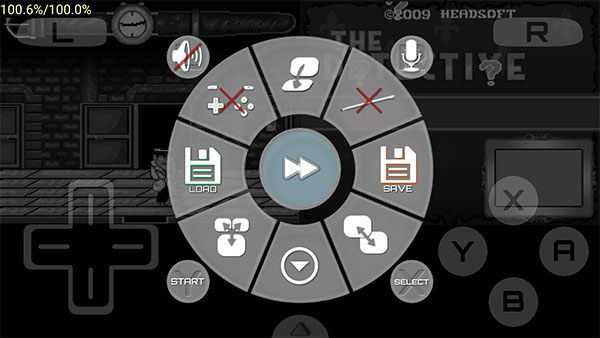

Drastic 是什么？十个快问快答把这款 NDS 模拟器讲透
Drastic 是 Android 平台评价最高的 NDS 模拟器之一。这篇快问快答整理了新手最常问的十个问题：它能跑什么游戏、画质能调到什么程度、多线程渲染开不开、皮肤怎么换、特殊功能键怎么绑、大 ROM 加载失败怎么办、和 DraStic 原版有啥区别。
整理一篇关于 Drastic 的快问快答——作为 Android 上口碑最好的 NDS 模拟器，圈里几乎没人没听过它，但真上手的时候总有一堆零散的疑问。下面十个问题，覆盖从入门到进阶最常见的场景。
Drastic 到底是什么？
Drastic 是一款专门跑任天堂 NDS 游戏的模拟器，首发在 Android 平台。它的定位很明确：不搞多合一，就做 NDS，而且要做到最快最稳——圈里的介绍和版本追踪在drastic官网上也能看到。安卓模拟器圈里同时期冒出过不少竞争者，能活到现在还在持续更新的没几个，Drastic 是其中用户量最大的一个。

它能跑哪些游戏？
几乎所有原版 NDS ROM 都能跑。NDS 生命周期 2004 到 2011 年，游戏库超过 3000 款——从《口袋妖怪 黑白》《塞尔达传说 幻影沙漏》到《马里奥赛车 DS》《任天狗》，Drastic 基本全覆盖。社区魔改的 hack ROM 和自制游戏（homebrew）也能跑一部分，前提是 ROM 文件本身没有问题，模拟器的下载安装包从正规渠道拿就行。
ROM 来源需要自己准备，模拟器本身不带游戏资源。这点要注意：模拟器是工具，ROM 的获取在各个圈子里有不同的传播渠道。
画质和性能能调到什么程度？
Drastic 的视频设置面板里，最能影响画面的三个选项是分辨率缩放、多线程 3D 渲染、跳帧。分辨率默认是 1x（原始 NDS 分辨率），可以拉到 2x、3x，画面会明显变清楚但 CPU 占用也跟着上去。多线程 3D 渲染是个矛盾项——开了之后多核 CPU 能获得 20% 到 40% 的帧率提升，但代价是部分游戏会出现画面闪烁、纹理错位甚至黑屏。
drastic文档里特意提醒：遇到画面问题先把这个选项关掉再报 bug。经验上，骁龙 765 或天玑 800 以上的芯片比较适合开，老一些的手机建议保持默认关闭状态，出问题了再决定要不要试。多线程渲染和 GPU 没什么关系，加速完全在 CPU 层面实现，所以别以为手机 GPU 好就能随便开，核心数才是关键。
大 ROM 加载失败黑屏怎么办？
这是社区 hack ROM 玩家最常遇到的问题。NDS 原版卡带物理上限 512MB，Drastic 默认会检查文件大小，超过就拒绝加载。解决办法在高级设置里有一个叫 "Ignore gamecard limit" 的开关，打开就能跳过大小检查。
这个功能默认是关的，原因也合理——开了之后所有 ROM 都跳过检查，虽然不会把正常 ROM 弄坏，但理论上可能加载到恶意伪造的超大 ROM。正确的用法是：加载某个大 ROM 失败时临时开一下，确认能跑之后再关掉，保持默认安全状态。
还有一个相关选项叫 Auto-Trim ROM，和 Ignore gamecard limit 是一对。如果你的大 ROM 加载很慢，两个都开可能有帮助——一个放行一个减肥，方向不同但目标都是让大 ROM 顺利跑起来。
虚拟按键可以自定义吗？
完全可以，而且 Drastic 给了两层自由度：皮肤和布局。皮肤控制按钮的外观——颜色、形状、图标都能换，皮肤文件本质上就是一个 ZIP 包，里面是固定命名的 PNG 图片（a.png、b.png、x.png……一共十二个键位对应十二张图）。互联网上现成的皮肤包非常多，宝可梦主题、Zelda 绿金配色、复古 Game Boy 风格都有，下载后直接丢进 DraStic/virtual_controller/ 目录就行。
布局编辑器控制的是按钮位置和大小——在屏幕上按住一个按钮就能拖动，还能拖出额外的虚拟按键。皮肤和布局是互补关系：先选一个喜欢的皮肤，再进布局编辑器微调位置，就是最舒适的配置。

那三个 Special Button 是干嘛的？
这是 Drastic 最被低估的功能之一。在虚拟游戏板设置里有三个 Special Button，默认不显示在屏幕上，需要你自己拖出来或绑到实体手柄键上。每个可以绑定一个特定动作：快进、快速存读档、交换上下屏、一键分屏切单屏、自动开火、模拟 NDS 麦克风吹气、开合 NDS 盖、声音开关、触屏开关、打开菜单——一共十几种。
日常玩家最常用的搭配是：快进绑一个，快速存档绑一个，快速读档绑第三个。玩口袋妖怪练级多的话可以把快速存档换成 Fake mic，部分游戏的语音互动功能需要用到它。射击游戏玩家可以把 Auto-fire 自动开火绑上，格斗游戏和节奏游戏特别实用。
和其他 NDS 模拟器比有什么优势？
现在还在活跃维护的 NDS 模拟器主要就两家：Drastic 和 DeSmuME 的移动端移植版。DeSmuME 功能全但界面偏技术向，Drastic 主打易用性和性能，虚拟按键和 Special Button 这套交互设计至今还没被别家抄到位。另一个老竞争者 DraStic 原版其实就是 Drastic 的前身——开发者后期独立出来做了现在的版本，架构更轻，兼容性反而更好。
有没有长期用的价值？
如果你手机里还有 NDS 游戏的情怀或者想补一补课，Drastic 值得装。它不怎么吃资源，2018 年后的 Android 手机基本都能满速跑，虚拟按键定制、Special Button、皮肤系统这三个功能加起来把"移动端玩 NDS"这件事的体验推到了天花板。唯一需要注意的就是多线程渲染别瞎开，遇到画面问题第一反应先把它关掉，基本都能解决。
资料维护和备份这块，文档、皮肤包、配置我同步放在了GitHub、Gitee、GitCode 三个仓库，国内网络下 Gitee 和 GitCode 的访问会更顺畅一些，文档目录里也附带了完整的快捷键说明和常见问题排查清单。